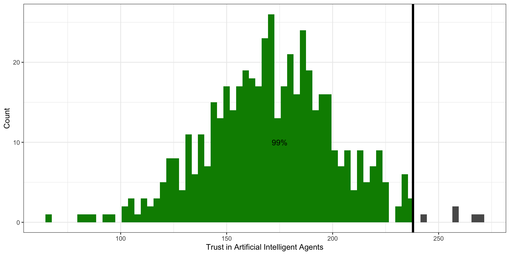
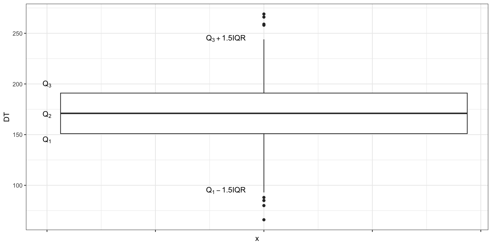
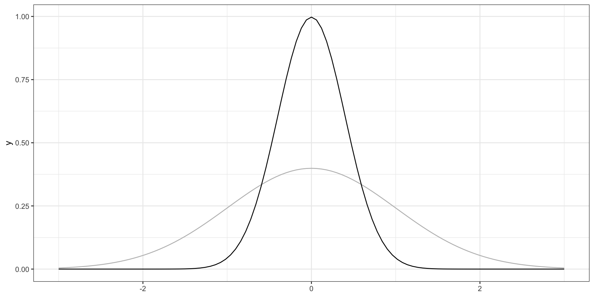
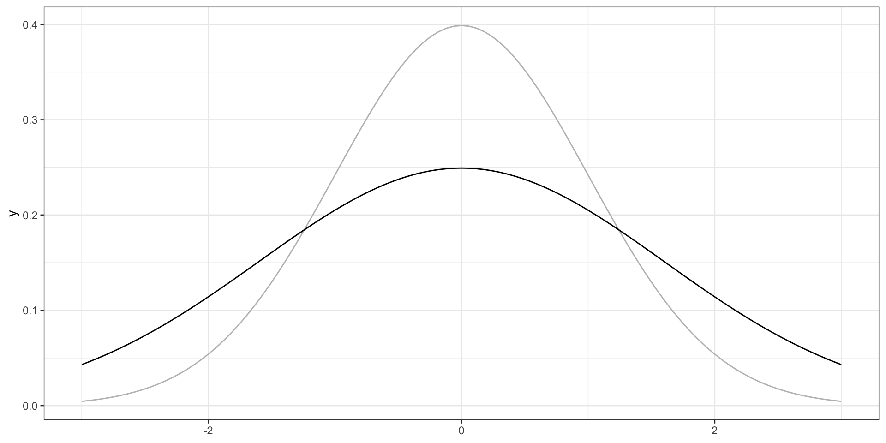

L7 // Описательные статистики. Корреляционный анализ
Что будет?
- Описательная статистика vs статистика вывода
- Центральная тенденция и разброс
- Выбросы
- Коэффициент корреляции
- Его статистическая значимость и доверительный интервал
- Нестандартные коэффициенты корреляции
L7.1 // Описательные статистики
Виды статистики
- Описательная статистика (descriptive statistics)
- обработка статистических данных
- их наглядное представление
- их описанием через некоторые характеристики
- Статистика вывода (inferential statistics)
- поиск ответов на содержательные вопросы
- тестирование статистических гипотез + статистические методы
Меры центральной тенденции
| Шкала | Мера центральной тенденции |
|---|---|
| Номинальная | Мода |
| Порядковая | Медиана |
| Интервальная | Среднее арифметическое |
| Абсолютная | Среднее арифметическое, геометрическое и др. |
Мода
Мода [дискретной переменной] — наиболее часто встречающееся значение данной переменной.
\[ \begin{bmatrix} 1 & 3 & 4 & 6 & 3 & 2 & 3 & 3 & 2 & 4 & 1 \end{bmatrix} \]
\[ \begin{matrix} \text{Значение} & 1 & 2 & 3 & 4 & 6 \\ \text{Частота} & 2 & 2 & 4 & 2 & 1 \end{matrix} \]
\[ \begin{bmatrix} \text{DME} & \text{LED} & \text{IST} & \text{AER} & \text{IST} &\text{SVO} & \text{LED} & \text{VKO} & \text{LED} & \text{IST} & \text{IST} & \text{VKO} & \text{AER} & \text{DME} \end{bmatrix} \]
\[ \begin{matrix} \text{Значение} & \text{DME} & \text{LED} & \text{IST} & \text{AER} & \text{SVO} & \text{VKO}\\ \text{Частота} & 2 & 3 & 4 & 2 & 1 & 2 \end{matrix} \]
Мода. Функция вероятности
Мода [дискретной переменной] — это значение переменной, при котором её функция вероятности принимает своё максимальное значение.
\[ \text{mode}(X) = \arg \max(\text{PMF}(X)) = \arg \max_{x_i}(\mathbb{P}(X = x_i)), \]
где \(X\) — дискретная случайная величина, \(x_i\) — значение этой случайной величины.
Мода. Функция вероятности
Мода для непрерывной переменной
Мода. Функция плотности вероятности
Мода [непрерывной переменной] — это значение переменной, при котором её функция плотности вероятности достигает локального[^local-max-mode] максимума.
\[ \text{mode}(X) = \arg \max(\text{PDF}(X)) = \arg \max_{x \in S}f(x), \]
гдe \(X\) — непрерывная случайная величина, \(x\) — значение этой случайной величины, \(S\) — имеющаяся выборка значений переменной.
Мода. Функция плотности вероятности
Унимодальное распределение. Нормальное распределение
Унимодальное распределение. Биномиальное распределение
Унимодальное распределение. Распределение Пуассона
Унимодальность. Эмпирические распределения
Бимодальное и полимодальное распределения
Что это значит и что с этим делать?
Медиана
\[ \begin{bmatrix} 1 & 3 & 4 & 6 & 3 & 2 & 3 & 3 & 2 & 4 & 1 \end{bmatrix} \]
\[ \begin{bmatrix} 1 & 1 & 2 & 2 & 3 & 3 & 3 & 3 & 4 & 4 & 6 \end{bmatrix} \]
\[ \begin{bmatrix} 1 & 1 & 2 & 2 & 3 & \mathbf{3} & 3 & 3 & 4 & 4 & 6 \end{bmatrix} \]
Медиана
Медиана (median) — это значение, которое располагается на середине отсортированного ряда значений переменной.
\[ \begin{bmatrix} 14 & 10 & 9 & 16 & 30 & 3 & 25 & 8 & 18 & 7 \end{bmatrix} \]
\[ \begin{bmatrix} 3 & 7 & 8 & 9 & 10 & 14 & 16 & 18 & 25 & 30 \end{bmatrix} \]
\[ \begin{bmatrix} 3 & 7 & 8 & 9 & 10 & | & 14 & 16 & 18 & 25 & 30 \end{bmatrix} \]
\[ \text{median} = \frac{10 + 14}{2} = 12 \]
Медиана. Вычисление
\[ \text{median}(X) = X(a) = \cases{ X\left(\frac{n+1}{2}\right), & if 2 | n \\ \dfrac{X(\frac{n}{2}) + X(\frac{n}{2} + 1)}{2}, & otherwise } \]
где \(X\) — ряд наблюдений случайной величины, \(n\) — число наблюдений, \(X(a)\) — наблюдение с индексом \(a\) в отсортированном векторе \(X\).
Медиана и распределение
Медиана. Асимметричное распределение
Медиана. Асимметричное распределение
Медиана. Бимодальное распределение
Арифметическое среднее
\[ \mathbb{M}_X = \bar X = \dfrac{\sum_{i=1}^{n}x_i}{n}, \]
где \(\bar X\) — среднее арифметическое, \(x_i\) — наблюдение в векторе \(X\), \(n\) — количество наблюдений.
Свойства среднего арифметического
\[ \mathbb{M}_{X+c} = \mathbb{M}_X + c \]
\[ \mathbb{M}_{X+c} = \frac{\sum_{i=1}^n (x_i + c)}{n} = \frac{\sum_{i=1}^n x_i + nc}{n} = \frac{\sum_{i=1}^n x_i}{n} + c = \mathbb{M}_X + c \]
Свойства среднего арифметического
\[ \mathbb{M}_{X \times c} = \mathbb{M}_X \times c \]
\[ \mathbb{M}_{X \times c} = \frac{\sum_{i=1}^n (x_i \times c)}{n} = \frac{c \times \sum_{i=1}^n x_i}{n} = \frac{\sum_{i=1}^n x_i}{n} \times c = \mathbb{M}_X \times c \]

Свойства среднего арифметического
\[ \sum_{i=1}^n(x_i - \bar X) = 0 \]
\[ \begin{split} \sum_{i=1}^n(x_i - \bar X) & = \sum_{i=1}^n x_i - \sum_{i=1}^n \bar X = \sum_{i=1}^n x_i - n \bar X = \\ & = \sum_{i=1}^n x_i - n \times \frac{1}{n} \sum_{i=1}^n x_i = \sum_{i=1}^n x_i - \sum_{i=1}^n x_i = 0 \end{split} \]
Отклонение
Отклонение — это разность между средним и конкретным значением переменной.
Геометрическое среднее
\[ G_{X} = \sqrt[n]{\prod_{i=1}^n x_i} = \Big(\prod_{i=1}^n x_i\Big)^{\tfrac{1}{n}} \]
Квадратичное среднее
Квадратичное среднее (quadratic mean, root mean square, RMS) — это квадратный корень из среднего квадрата наблюдений.
\[ S_X = \sqrt{\frac{\sum_{i=1}^n x_i^2}{n}} \]
Гармоническое среднее
\[ H_X = \frac{n \prod_{i=1}^n x_i}{\sum_{i=1}^n (\tfrac{1}{x} \prod_{j=1}^n x_j)} = \frac{n}{\sum_{i=1}^n \tfrac{1}{x_i}} \]
Взвешенное среднее
\[ \text{final score } = 1 \cdot \text{test} + 3 \cdot \text{essay} + 6 \cdot \text{exam} \]
\[ \text{final score } = \frac{1 \cdot \text{test} + 3 \cdot \text{essay} + 6 \cdot \text{exam}}{1 + 3 + 6} \]
\[ \bar X = \frac{\sum_{i=1}^n w_i x_i}{\sum_{i=1}^n w_i} = \sum_{i=1}^n w_i' x_i, \]
где \(x_i\) — значения конкретных параметров, \(w_i\) — веса конкретных параметров, \(w_i'\) — нормированные веса параметров.
\[ w_i' = \frac{w_i}{\sum_{i=1}^n w_i} \]
Среднее vs медиана vs мода
- моду невозможно посчитать для непрерывной переменной
- медиану нельзя посчитать на номинальной шкале
- среднее тоже нельзя посчитать на номинальной шкале
- для дискретной переменной значение среднего арифметического может быть не особо применимо
Среднее vs медиана vs мода. Симметричное распределение распределения
- На симметричном распределении мода, медиана и среднее совпадают
Среднее vs медиана vs мода. Асимметричное распределение распределения
- На асимметричном распределении мода в пике
- На асимметричном распределении медиана и среднее смещены в сторону хвоста. Среднее смещено сильнее медианы
Среднее и медиана. Большие значения
Есть ряд наблдюдений:
[1] 6 7 7 8 8Посчитаем медиану и среднее:
[1] 7[1] 7.2В ряду наблюдений появились значения, сильно отклоняющиеся от остальных:
[1] 6 7 7 8 8 3 4Посчитаем медиану и среднее теперь:
[1] 7[1] 6.142857Мода vs медиана vs среднее. Бимодальное распределение
Меры разброса
Меры разброса. Зачем?
Минимум, максимум, размах
[1] 7 4 6 9 10 5 6 9 6 6 3 6 8 8 5 10 7 5 7 3 9 4 8 3 8
[26] 4 6 8 7 5[1] 3[1] 10\[ \mathrm{range}(X) = \max(X) - \min(X) \]
Другой ряд наблюдений
[1] 6 8 4 6 7 5 7 10 4 6 7 8 7 6 8 10 8 7 7 6 8 7 6 8 6
[26] 3 8 6 6 4Размах такой же, но вариативность разная.
Дисперсия
\[ d_i = \bar X - x_i \]
\[ \bar d = \frac{1}{n} \sum_{i=1}^n \bar X - x_i \]
\[ \mathbb{D}_X = \text{var}(X) = \sigma^2 = \frac{1}{n} \sum_{i=1}^n (\bar X - x_i)^2 \]
\[ s^2 = \frac{1}{n-1} \sum_{i=1}^n (\bar X - x_i)^2 \]
Степени свободы
Во всём виновата выборка.
Взглянем на формулу дисперсии: в неё входит среднее арифметическое. То есть для того, чтобы рассчитать дисперсию на выборке, сначала нам необходимо на этой же выборке рассчитать среднее. Тем самым, мы как бы «фиксируем» нашу выборку этим средним значением — у значений нашего распределения становится меньше свободы для варьирования. Теперь свободно варьироваться могут \(n-1\) наблюдение, так как последнее всегда будет возможно высчитать, исходя из среднего значения. По этой причине нам необходимо корректировать исходную формулу расчета дисперсии.
Стандартное отклонение
\[ \sigma = \sqrt{\sigma^2} = \sqrt{\frac{1}{n} \sum_{i=1}^n (\bar X - x_i)^2} \]
\[ s = \sqrt{s^2} = \sqrt{\frac{1}{n-1} \sum_{i=1}^n (\bar X - x_i)^2} \]
Свойства дисперсии и стандартного отклонения
\[ \mathbb{D}_{X+c} = \mathbb{D}_{X} \]
\[ \begin{split} \mathbb{D}_{X+c} &= \frac{\sum_{i=1}^n \big((\bar X + c) - (x_i + c)\big)^2}{n-1} = \\ &= \frac{\sum_{i=1}^n \big(\bar X + c - x_i - c\big)^2}{n-1} \\ & = \frac{\sum_{i=1}^n \big(\bar X - x_i\big)^2}{n-1} = \mathbb{D}_X \end{split} \]
\[ \mathbb{D}_{X \cdot c} = c^2\mathbb{D}_{X} \]
\[ \mathbb{D}_{X \cdot c} = \frac{\sum_{i=1}^n (c\bar X - cx_i)^2}{n-1} = \frac{\sum_{i=1}^n c^2(\bar X - x_i)^2}{n-1} = \frac{c^2 \sum_{i=1}^n (\bar X - x_i)^2}{n-1} = c^2\mathbb{D}_X \]
\[ s_{X+c} = s_X \]
\[ s_{X+c} = \sqrt{s^2_{x+c}} = \sqrt{s^2_x} = s_x \]
Свойства дисперсии и стандартного отклонения

Свойства дисперсии и стандартного отклонения
\[ s_{X \cdot c} = c\cdot s_X \]
\[ s_{X \cdot c} = \sqrt{s^2_{X \cdot c}} = \sqrt{s_X \cdot c^2} = c \cdot s_x \]
Свойства дисперсии и стандартного отклонения
Квантили
Квантиль. Определение
Квантиль — это значение переменной, которое не превышается с определенной вероятностью (обозначим её \(p\)). Иначе говоря, слева от значения квантиля лежит \(p\%\) наблюдений.
Квантили. Визуализация

Квартили
Квартили
- слева от первого (нижнего) квартиля (\(Q_1\), \(x_{0.25}\)) лежит 25% наблюдений
- слева от второго (среднего) квартиля (\(Q_2\), \(x_{0.50}\)) лежит 50% наблюдений
- а значит и справа 50% — получается второй квартиль делит выборку пополам — это медиана
- слева от третьего (верхнего) квартиля (\(Q_3\), \(x_{0.75}\)) лежит 75% наблюдений
Децили
К слову, делить выборку можно не только на четверти — можно поделить, скажем, на 10 частей и получить децили. Так, слева от первого дециля (\(x_{0.10}\)) лежит 10% наблюдений, а слева от третьего (\(x_{0.30}\)) — 30%.
Перцентили
Перцентили — значения переменной, которые делят выборку на 100 равных частей.
Интерквартильный размах
\[ \mathrm{IQR}(X) = Q_3(X) - Q_1(X) \]

Визуализация квартилей. Боксплот
Боксплот. Элементы
Сравнение мер разброса
- с медианой используется мехквартильных размах
- со средним арифметическим — стандартное отклонение
- для номинативных переменных — число уникальных значений
Асимметрия
\[ \mathrm{skew}(X) = \frac{\frac{1}{n}\sum_{i=1}^n (\bar X - x_i)^3}{\left(\frac{1}{n-1} \sum_{i=1}^n (\bar X - x_i)^2 \right)^{3/2}} \]
- положительный коэффициент асимметрии (positive skew)
- длинный правый хвост
- преобладают низкие значения
- отрицательный коэфффициент асимметрии (negative skew)
- длинный правый хвост
- преобладают высокие значения
- значения коэффициента асимметрии, близкие к нулю, говорят о симметричности распределения
Асимметрия. Симметричное распределение
Левосторонняя асимметрия
Правосторонняя асимметрия
Эксцесс
\[ \mathrm{kurt}(X) = \frac{\frac{1}{n}\sum_{i=1}^n (\bar X - x_i)^4}{\left(\frac{1}{n-1} \sum_{i=1}^n (\bar X - x_i)^2 \right)^{2}} - 3 \]
- нулевой коэффициент эксцесса обозначает такой же эксцесс, как у стандартного нормального распределения (то есть, «нормальный»)
- положительный коэффициент эксцесса — более острая вершина (очень много средних значений, но мало низких и высоких)
- отрицательный коэффициент эксцесса — более пологая вершина (меньше средних значений и много низких и высоких)
Нулевой эксцесс
Положительный эксцесс
Отрицательный эксцесс
L7.2 // Корреляционный анализ
Совместная изменчивость
Совместная изменчивость
Совместная изменчивость
Совместная изменчивость
Совместная изменчивость
Ковариация
\[ \mathrm{cov}(X_1, X_2) = \frac{1}{n} \sum_{i=1}^n (\bar X_1 - x_{i1}) (\bar X_2 - x_{i2}) \]
Линейность взаимосвязи

Недостатки ковариации
- это размерная величина, поэтому её значение зависит от единиц измерения признаков
- она зависит от дисперсий признаков, поэтому по её значению можно определить только направление связи (прямая или обратная), однако ничего нельзая сказать о силе связи
Корреляция
\[ X_i^* = \frac{x_i - \bar X}{s} \]
\[ \mathrm{cov}(X_1^*, X_2^*) = \frac{1}{n-1} \sum_{i=1}^n x_{i1}^* x_{i2}^* = \mathrm{corr}(X_1, X_2), \] где \(X_1^*\) и \(X_2^*\) — стандартизированные величины \(X_1\) и \(X_2\) соответственно.
\[ \begin{split} \mathrm{corr}(X_1, X_2) & = \frac{1}{n-1} \sum_{i=1}^n \Big( \frac{\bar x_1 - x_{i1}}{s_1} \Big) \Big( \frac{\bar x_2 - x_{i2}}{s_2} \Big) = \\ & = \frac{1}{s_1 s_2} \Big( \frac{1}{n-1} \sum_{i=1}^n (\bar x_1 - x_{i1})(\bar x_2 - x_{i2}) \Big) = \\ & = \frac{\mathrm{cov}(X_1, X_2)}{s_1 s_2} \end{split} \]
Интерпретация коэффициента корреляции
| Значение коэффициента | Интерпретация |
|---|---|
| \(-1.0\) – \(-0.9\) | очень сильная обратная связь |
| \(-0.9\) – \(-0.7\) | сильная обратная связь |
| \(-0.7\) – \(-0.5\) | средняя обратная связь |
| \(-0.5\) – \(-0.3\) | слабая обратная связь |
| \(-0.3\) – \(0.0\) | очень слабая обратная связь |
| \(0.0\) – \(0.3\) | очень слабая прямая связь |
| \(0.3\) – \(0.5\) | слабая прямая связь |
| \(0.5\) – \(0.7\) | средняя прямая связь |
| \(0.7\) – \(0.9\) | сильная прямая связь |
| \(0.9\) – \(1.0\) | очень сильная прямая связь |
Тестирование статистической значимости коэффициента корреляции
\[ \hat \rho_{ij} = \overline{\big( (X_{ki} - \bar X_i) (X_{kj} - \bar X_j) \big)} = r_{ij} \]
\[ \begin{split} H_0&: \rho_{ij} = 0 \; \text{(линейной связи нет)} \\ H_1&: \rho_{ij} \neq 0 \; \text{(наиболее частый вариант альтернативы)} \end{split} \]
\[ t = \frac{r_{ij}}{\sqrt{\frac{1 - r^2_{ij}}{n-2}}} \overset{H_0}{\thicksim} t(\nu = n-2) \]
Размер эффекта в корреляционном анализе
| Значение коэффициента | Размер эффекта |
|---|---|
| \(0.1\) | Малый (small) |
| \(0.3\) | Средний (medium) |
| \(0.7\) | Большой (large) |
Доверительный интервал для коэффициента корреляции
\[ \mathbb{P}(\rho_{ij,\min} < \rho_{ij} < \rho_{ij,\max}) = \gamma \]
- z-преобразование Фишера
\[ z(r_{ij}) = \frac{1}{2} \ln \frac{1 + r_{ij}}{1 - r_{ij}} \thicksim \mathrm{N}(\bar z_{ij}, \tfrac{1}{n-3}), \]
где \(n\) — объём выборки, а \(\bar z_{ij}\) получается расчётом по указанной формуле после подставления точечной оценки коэффициента корреляции.
\[ \mathbb{P}\Big( \bar z_{ij} - t_\gamma \sqrt{\tfrac{1}{n-3}} < z_{ij, \mathrm{true}} < \bar z_{ij} + t_\gamma \sqrt{\tfrac{1}{n-3}} \Big) = \gamma \]
Коэффициенты корреляции для разных шкал
| Переменная \(X\) | Переменная \(Y\) | Мера связи |
|---|---|---|
| Интервальная или отношений | Интервальная или отношений | Коэффициент Пирсона |
| Ранговая, интервальная или отношений | Ранговая, интервальная или отношений | Коэффициент Спирмена |
| Ранговая | Ранговая | Коэффициент Кенделла |
Корреляционная матрица
\[ R = \begin{pmatrix} 1 & r_{12} & \dots & r_{1p} \\ r_{12} & 1 & \dots & r_{2p} \\ \vdots & \vdots & \ddots & \vdots \\ r_{p1} & r_{p2} & \dots & 1 \end{pmatrix} \]
Частная корреляция
\[ R = \begin{pmatrix} 1 & r_{12} & r_{13} \\ r_{21} & 1 & r_{23} \\ r_{31} & r_{32} & 1 \end{pmatrix} \]
\[ r_{12,3} = \frac{r_{12} - r_{13} \cdot r_{23}}{\sqrt{(1 - r^2_{23})(1-r^2_{13})}} \]
\[ \begin{split} H_0&: \rho_{12,3} = 0 \\ H_1&: \rho_{12,3} \neq 0 \\ t &= \frac{r_{12,3} \sqrt{n-3}}{\sqrt{1 - r^2_{12,3}}} \overset{H_0}{\thicksim} t(\nu = n-3) \end{split} \]
Множественная корреляция
\[ R_1 = \sqrt{1 - \frac{\det R}{A_{11}}} \]
Другие корреляции
Можно коррелировать не только количественные и ранговые шкалы между собой, но и качественные тоже:
| Переменная \(X\) | Переменная \(Y\) | Мера связи |
|---|---|---|
| Дихотомическая | Дихотомическая | \(\phi\)-коэффициент |
| Дихотомическая | Ранговая | Рангово-бисериальный коэффициент |
| Дихотомическая | Интервальная или отношений | Бисериальный коэффициент |
Критерий независимости Пирсона
Эмпирическая таблица частот:
| \(X_1\) | \(X_2\) | |
|---|---|---|
| \(Y_1\) | \(p_{X_1,Y_1} = a\) | \(p_{X_2,Y_1} = b\) |
| \(Y_2\) | \(p_{X_1,Y_2} = c\) | \(p_{X_2,Y_2} = d\) |
Теоретическая таблица частот:
| \(X_1^*\) | \(X_2^*\) | |
|---|---|---|
| \(Y_1^*\) | \(\frac{(a+b) \times (a+c)}{N}\) | \(\frac{(b+a) \times (b+d)}{N}\) |
| \(Y_2^*\) | \(\frac{(c+d) \times (a+c)}{N}\) | \(\frac{(d+c) \times (b + d)}{N}\) |
где \(N = a + b + c + d\).
Расчет критерия независимости Пирсона
\[ \begin{split} H_0 &: p_{X_{i_1}, Y_{j_1}} = p_{X_{i_2}, Y_{j_2}}, \, i_1 \neq i_2, \, j_1 \neq j_2 \\ H_1 &: \exists i_1, i_2, j_1, j_2: p_{X_{i_1}, Y_{j_1}} \neq p_{X_{i_2}, Y_{j_2}} \end{split} \]
\[ \chi^2 = \sum_{i,j} \frac{p_{X_i,Y_j} - p_{X_i^*,Y_j^*}}{p_{X_i^*,Y_j^*}} \]
\(\phi\)-коэффициент
\[ \phi = \sqrt{\frac{\chi^2}{N}} \]
Бисериальный коэффициент корреляции
\[ r = \frac{\bar x_1 - \bar x_2}{s_Y} \sqrt{\frac{n_1 n_2}{N(N-1)}}, \]
где \(\bar x_1\) — среднее по элементам переменной \(y\) из группы \(x_1\), \(\bar x_2\) — среднее по элементам \(y\) из группы \(x_2\), \(s_y\) — стандартное отклонение по переменной \(y\), \(n_1\) — число элементов в группе \(x_1\), \(n_2\) — число элементов в группе \(x_2\), \(N\) — общее число элементов.
Знак коэффициента не влияет на интерпретацию, анализируется только абсолютное значение.
Рангово-бисериальный коэффициент корреляции
\[ r = \frac{2(\bar x_1 - \bar x_2)}{N}, \]
где \(\bar x_1\) — средний ранг в группе \(x_1\), \(\bar x_2\) — средний ранг в группе \(x_2\), \(N\) — общее количество наблюдений.
Преобразование Фишера
\[ z_i = \frac{1}{2} \ln \frac{1 + r_i}{1 - r_i} = \mathop{\mathrm{artanh}}(r_i) \]
\[ r_P = \dfrac{e^{2z_P} - 1}{e^{2z_P} + 1} = \tanh(z_P) \]
Итоги
- Разделили описательную статиститку и статистику вывода
- Рассмотрели и сравнили разные меры центральной тенденции
- Изучили и сопоставили разные меры разброса
- Исследовали корреляционный анализ
- Взглянули на знакомые и незнакомые коэффициенты корреляции
L7 // Описательные статистики. Корреляционный анализ
Антон Ангельгардт

WLM 2023